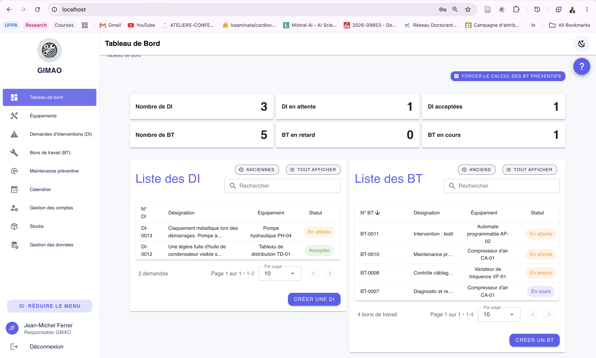

Apercu

Fonctionnalites
Demandes d'intervention
Les operateurs signalent les pannes avec description et photo. Le responsable accepte, refuse ou transforme la demande en bon de travail.
Bons de travail
Assignation aux techniciens, suivi des statuts (en attente, en cours, termine, cloture), compte-rendu, consommables et documents joints.
Maintenance preventive
Plans de maintenance avec compteurs numeriques ou calendaires. Les bons de travail preventifs sont generes automatiquement a echeance.
Equipements
Catalogue complet avec localisation, fabricant, modele, statuts, indicateurs MTBF et MTTR, historique des etats et documents.
Stocks
Consommables par magasin, achats, transferts, alertes de seuil et validation des demandes de pieces sur les interventions.
Roles et permissions
Cinq roles par defaut (Responsable GMAO, Technicien prod, Technicien maintenance, Magasinier, Operateur prod) avec permissions personnalisables par utilisateur.
Import Excel
Chargement en masse des equipements et des donnees de reference depuis un modele Excel fourni, avec rapport detaille et protection contre les doublons.
Exports
Export Excel des equipements, interventions, stocks et utilisateurs. Documentation interactive de l'API via Swagger.
Architecture technique
| Couche | Technologie |
|---|---|
| Backend | Python, Django, Django REST Framework |
| Frontend | Vue 3, Vuetify 3 |
| Base de donnees | MariaDB |
| Serveur web | Nginx |
| Deploiement | Docker, Docker Compose (images multi-architecture) |
| Tests | pytest, Vitest, integration continue GitHub Actions |
Installation en bref
- Installer Docker Desktop et le lancer.
- Recuperer le projet depuis le depot GitHub.
- Sous Windows, double-cliquer sur
install.bata la racine du projet. - L'application s'ouvre sur
http://localhostavec un compte Responsable GMAO pret a l'emploi.
La procedure complete, la configuration manuelle et les commandes de gestion sont detaillees dans le README du depot.
Licence
GIMAO est distribue sous licence GNU AGPL v3 : le code source est libre, et toute version modifiee mise a disposition d'utilisateurs doit egalement publier ses sources.